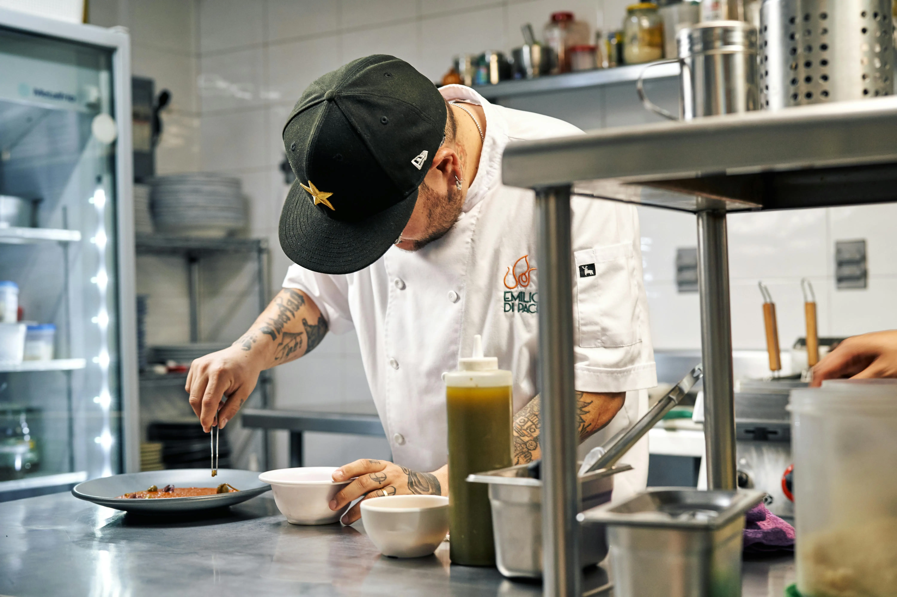
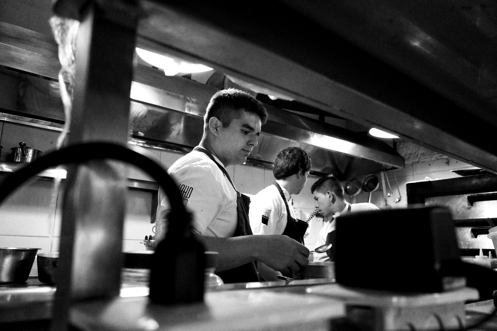

Grille des salaires cuisiniers 2026 : de commis à chef de cuisine — brut, net, 35h et 39h
Combien gagne vraiment un cuisinier en France en 2026 ? Entre les minima conventionnels, les salaires réels du marché, les primes d'ancienneté et les différences entre un bistrот parisien et un étoilé en province, les écarts sont considérables. Ce guide compile toutes les données : grille CHR par niveau et échelon, conversion brut/net, comparatif par type d'établissement et grille complète des apprentis cuisine.

La grille CHR : niveaux, échelons et correspondance avec les postes de cuisine
La convention collective CHR (IDCC 1979) organise les salaires en 5 niveaux et 3 échelons par niveau, soit 15 cases au total. En cuisine, chaque poste correspond à un niveau précis — et c'est ce niveau qui détermine le salaire minimum légal que l'employeur doit verser.
Les montants ci-dessous sont ceux de l'avenant n°33, signé le 19 juin 2024, en vigueur depuis le 1er décembre 2024. Le SMIC au 1er janvier 2026 est de 12,02 €/h — il dépasse légèrement le minima conventionnel du niveau I/1 (12,00 €), donc c'est le SMIC qui s'applique pour ce seul échelon.
| Niveau CHR | Échelon | Taux horaire brut | Postes de cuisine correspondants |
|---|---|---|---|
| I Débutant |
1 | 12,02 € (SMIC) | Plongeur, aide de cuisine, stagiaire non diplômé, commis 1re semaine |
| 2 | 12,08 € | ||
| 3 | 12,18 € | ||
| II CAP/BEP ou équivalent |
1 | 12,28 € | Commis de cuisine, aide-cuisinier, cuisinier polyvalent débutant |
| 2 | 12,55 € | ||
| 3 | 13,17 € | ||
| III Bac pro ou expérience |
1 | 13,32 € | Cuisinier confirmé, chef de partie, demi-chef de partie, tournant |
| 2 | 13,54 € | ||
| 3 | 14,00 € | ||
| IV Agent de maîtrise |
1 | 14,40 € | Sous-chef de cuisine, second de cuisine, chef de cuisine adjoint |
| 2 | 14,77 € | ||
| 3 | 15,40 € | ||
| V Cadre |
1 | 18,43 € | Chef de cuisine, chef exécutif, directeur de restauration |
| 2 | 21,78 € | ||
| 3 | 28,12 € |
Source : avenant n°33 du 19 juin 2024, applicable depuis le 1er décembre 2024. SMIC au 1er janvier 2026 : 12,02 €/h.
Comment passe-t-on d'un échelon à l'autre ?
Contrairement à d'autres conventions, la CHR ne fixe pas de délai automatique pour changer d'échelon — c'est à la discrétion de l'employeur, en fonction des compétences acquises et de l'ancienneté. En pratique, un changement d'échelon s'effectue tous les 12 à 18 mois dans les établissements bien gérés. Il doit être formalisé par un avenant au contrat de travail. Sans avenant signé, le salarié reste à son échelon d'origine, même s'il occupe des responsabilités supérieures depuis des années — et c'est souvent là que les contentieux naissent.
Salaires cuisiniers 2026 en base 35h — tableau complet brut et net
Le tableau ci-dessous donne les salaires mensuels bruts basés sur 151,67h par mois (35h hebdomadaires), avec une estimation du net à percevoir. Le net correspond à environ 77% du brut en restauration (charges salariales ~23%).
| Poste | Niveau / Échelon | Brut mensuel 35h | Net estimé |
|---|---|---|---|
| Plongeur / Aide de cuisine | I/1 | 1 823 € | ≈ 1 404 € |
| Commis de cuisine débutant | I/2 – II/1 | 1 832 – 1 862 € | ≈ 1 411 – 1 434 € |
| Commis de cuisine confirmé | II/2 – II/3 | 1 903 – 1 997 € | ≈ 1 465 – 1 538 € |
| Cuisinier / Demi-chef de partie | III/1 | 2 020 € | ≈ 1 555 € |
| Chef de partie | III/2 – III/3 | 2 054 – 2 123 € | ≈ 1 582 – 1 635 € |
| Sous-chef / Second de cuisine | IV/1 – IV/3 | 2 184 – 2 336 € | ≈ 1 682 – 1 799 € |
| Chef de cuisine | V/1 – V/3 | 2 795 – 4 265 € | ≈ 2 152 – 3 284 € |
Base 35h = 151,67h × taux horaire. Net estimé = brut × 0,77. Ces montants sont des minima légaux — les salaires réels du marché sont souvent supérieurs.
Salaires cuisiniers 2026 en base 39h — la réalité de la branche CHR
Dans la restauration commerciale, la semaine de travail de référence est historiquement de 39 heures, pas 35h. Les 4 heures hebdomadaires supplémentaires (36e à 39e heure) sont majorées de 10 % conformément à la convention CHR. En pratique, la grande majorité des cuisiniers travaillent sur une base de 169 heures par mois.
| Poste | Niveau | Brut mensuel 39h | Net estimé 39h | Écart vs 35h |
|---|---|---|---|---|
| Plongeur / Aide de cuisine | I/1 | 2 052 € | ≈ 1 580 € | +229 € brut |
| Commis de cuisine | II/1 | 2 098 € | ≈ 1 615 € | +236 € brut |
| Commis confirmé | II/3 | 2 249 € | ≈ 1 732 € | +252 € brut |
| Cuisinier / Demi-chef de partie | III/1 | 2 274 € | ≈ 1 751 € | +254 € brut |
| Chef de partie | III/2 – III/3 | 2 312 – 2 390 € | ≈ 1 780 – 1 840 € | +258 – +267 € brut |
| Sous-chef / Second | IV/1 – IV/3 | 2 459 – 2 629 € | ≈ 1 893 – 2 024 € | +275 – +293 € brut |
| Chef de cuisine | V/1 – V/3 | 3 147 – 4 802 € | ≈ 2 423 – 3 698 € | +352 – +537 € brut |
Base 39h = 151,67h × taux + 17,33h × taux × 1,10. Ces 4h supp. majorées à 10% ajoutent environ 230 à 540 € brut selon le niveau.
Progression salariale par expérience : de commis à chef de cuisine
La vraie trajectoire d'un cuisinier, c'est une progression lente au départ — les premières années sont souvent difficiles financièrement — puis une accélération significative à partir du poste de chef de partie confirmé. Voici comment ça se passe concrètement, en intégrant les salaires réels du marché (pas seulement les minima).
| Expérience | Titre typique | Niveau CHR | Brut mensuel 39h | Net estimé |
|---|---|---|---|---|
| 0 – 1 an (CAP) | Commis de cuisine | I–II/1 | 2 050 – 2 100 € | ≈ 1 580 – 1 617 € |
| 1 – 3 ans | Commis confirmé | II/2 – II/3 | 2 150 – 2 300 € | ≈ 1 656 – 1 771 € |
| 3 – 5 ans | Demi-chef / Chef de partie junior | III/1 – III/2 | 2 300 – 2 600 € | ≈ 1 771 – 2 002 € |
| 5 – 10 ans | Chef de partie confirmé | III/2 – III/3 | 2 600 – 3 200 € | ≈ 2 002 – 2 464 € |
| 10 – 15 ans | Sous-chef / Second de cuisine | IV/1 – IV/3 | 3 000 – 4 000 € | ≈ 2 310 – 3 080 € |
| 15 ans et + | Chef de cuisine | V/1 – V/3 | 3 500 – 6 000 €+ | ≈ 2 695 – 4 620 €+ |
La prime d'ancienneté CHR : le calcul exact
La convention collective prévoit une prime d'ancienneté qui s'ajoute au salaire de base. Elle est calculée en pourcentage du salaire minimum de la catégorie du salarié :
- Après 3 ans d'ancienneté dans l'entreprise : +3%
- Après 6 ans : +6%
- Après 9 ans : +9%
- Après 12 ans : +12%
- Après 15 ans : +15% (plafond)
Exemple concret : un chef de partie (III/2) avec 7 ans d'ancienneté dans le même restaurant. Son salaire de base est 2 054 € brut (35h). La prime d'ancienneté est de 6% de ce minimum, soit +123 € brut. Son brut mensuel réel est donc au minimum de 2 177 €. Sur une carrière, ça représente plusieurs centaines d'euros par mois — un argument solide pour fidéliser ses cuisiniers.
Salaires réels par type d'établissement : brasserie, gastronomique, collective

Les minima conventionnels sont des planchers, pas des plafonds. Ce que gagne vraiment un cuisinier dépend avant tout du type d'établissement où il travaille. Les écarts sont considérables — parfois le simple vs le double pour le même poste.
| Type d'établissement | Commis / Cuisinier (net) | Chef de partie (net) | Chef de cuisine (net) |
|---|---|---|---|
| Brasserie / Bistrot traditionnel | 1 600 – 1 900 € | 1 900 – 2 200 € | 2 300 – 2 900 € |
| Restaurant classique | 1 700 – 2 000 € | 2 000 – 2 400 € | 2 500 – 3 200 € |
| Bistronomique / Gastro décontracté | 1 900 – 2 300 € | 2 300 – 2 900 € | 3 000 – 4 200 € |
| Gastronomique (sans étoile) | 2 000 – 2 500 € | 2 500 – 3 200 € | 3 500 – 5 000 € |
| Étoilé Michelin (1–2 étoiles) | 2 200 – 2 800 € | 2 800 – 3 500 € | 4 500 – 7 000 €+ |
| Restauration collective | 1 500 – 1 850 € | 1 900 – 2 200 € | 2 200 – 2 800 € |
Salaires nets mensuels estimés incluant les 39h et les primes habituelles. Sources : données de marché 2025-2026 compilées depuis les annonces d'emploi et les données sectorielles.
La restauration collective : moins bien payée mais plus stable
Les cuisiniers de la restauration collective (cantines scolaires, restaurants d'entreprise, hôpitaux, maisons de retraite) relèvent d'une convention collective différente — l'IDCC 1266 — avec une grille salariale légèrement inférieure à la CHR. Mais ce secteur offre des avantages que beaucoup de cuisiniers finissent par apprécier après quelques années en restauration commerciale : horaires fixes (souvent 7h-15h), pas de coupures, week-ends libres, 13e mois obligatoire, et une vraie stabilité d'emploi. Beaucoup de chefs de cuisine expérimentés "atterrissent" en collective après 40 ans précisément pour ces raisons.
Différences régionales : Paris paye vraiment plus ?
Oui — et l'écart est loin d'être anecdotique. Un chef de partie parisien peut gagner 25 à 30% de plus que son homologue en zone rurale, pour le même poste et les mêmes compétences. Mais le coût de la vie suit le même mouvement : un loyer parisien absorbe souvent la totalité de cet avantage.
| Zone géographique | Écart vs national | Chef de partie (net) | Chef de cuisine (net) |
|---|---|---|---|
| Île-de-France / Paris | +20 à +30% | 2 200 – 2 800 € | 3 200 – 5 000 €+ |
| Lyon, Bordeaux, Nantes, Toulouse | +10 à +15% | 2 000 – 2 400 € | 2 800 – 3 500 € |
| Stations balnéaires / ski (saison haute) | +10 à +20% | 2 000 – 2 600 € | 2 700 – 3 800 € |
| Villes moyennes (50 000–200 000 hab.) | référence | 1 800 – 2 100 € | 2 400 – 3 000 € |
| Province / zones rurales | –5 à –10% | 1 650 – 1 950 € | 2 200 – 2 700 € |
Un chiffre qui illustre la réalité : 89% des établissements parisiens paient leurs cuisiniers au-dessus des minima conventionnels, contre environ 34% dans les zones rurales. En province, les minima servent souvent de plafond autant que de plancher.
Primes, avantages en nature et pourboires : ce qui vient s'ajouter au salaire
Le 13e mois CHR : qui y a droit et quand ?
La convention collective CHR prévoit le versement d'un 13e mois à tout salarié ayant au moins 1 an d'ancienneté dans l'entreprise au 31 décembre. Ce montant est calculé au prorata si le salarié n'a pas travaillé toute l'année. Pour un chef de partie à 2 400 € brut mensuel, c'est 2 400 € supplémentaires par an — l'équivalent d'environ 200 € brut par mois sur douze mois. Un argument non négligeable à mettre en avant lors d'un recrutement.
L'avantage en nature repas : 4,25 € par repas en 2026
Dans les établissements CHR qui servent des repas au public, les salariés travaillant pendant les heures de repas ont droit à un repas gratuit. Sa valeur est évaluée au minimum garanti (MG), soit 4,25 € par repas au 1er janvier 2026. En cuisine, où on travaille souvent midi et soir, ça représente 8,50 € par jour ou environ 187 € par mois, intégré dans l'assiette des cotisations.
À noter : depuis 2004, cet avantage en nature ne peut plus être déduit du salaire minimum pour vérifier si le SMIC est atteint. C'est un avantage en plus du salaire brut, pas à la place.
Les pourboires en cuisine : la nouveauté post-2022
Depuis la loi de finances 2022, les pourboires versés volontairement par les clients peuvent être redistribués à l'ensemble de la brigade — salle ET cuisine — avec une exonération de cotisations sociales et d'impôt sur le revenu, sous conditions. Ce dispositif, encore peu utilisé dans les brasseries traditionnelles, se développe dans la restauration gastronomique et bistronomique.
En pratique, dans une bonne maison gastronomique parisienne, un chef de partie peut recevoir entre 100 et 500 € supplémentaires par mois via ce mécanisme. Ce n'est pas garanti, ça dépend des règles internes de l'établissement — mais c'est un élément à connaître lors d'une négociation salariale.
| Prime / Avantage | Montant / Règle | Obligatoire ? |
|---|---|---|
| 13e mois | 1 mois de salaire brut (après 1 an d'ancienneté) | ✅ Oui (convention CHR) |
| Prime d'ancienneté | +3% à +15% du salaire de base selon ancienneté | ✅ Oui (convention CHR) |
| Avantage en nature repas | 4,25 € par repas (MG 2026) | ✅ Oui (si établissement sert des repas) |
| Majoration heures de nuit | +10% entre 22h et 7h | ✅ Oui (convention CHR) |
| Pourboires partagés | 100 à 500 €/mois selon l'établissement | ❌ Non (décision de l'établissement) |
| Prime de fin d'année / intéressement | Variable selon l'établissement | ❌ Non |
Grille de salaire des apprentis cuisinier en 2026
Le salaire d'un apprenti cuisine est calculé en pourcentage du SMIC selon son âge et son année de contrat. Bonne nouvelle pour les jeunes en alternance : les apprentis de moins de 26 ans sont exonérés de cotisations salariales — leur salaire brut est donc égal à leur salaire net. C'est un avantage concret souvent mal connu.
| Année d'apprentissage | Moins de 18 ans | 18 – 20 ans | 21 – 25 ans | 26 ans et + |
|---|---|---|---|---|
| 1re année (CAP, BP, BTS…) | 27% — 492 € | 43% — 784 € | 53% — 966 € | 100% — 1 823 € |
| 2e année | 39% — 711 € | 51% — 930 € | 61% — 1 112 € | 100% — 1 823 € |
| 3e année | 55% — 1 003 € | 67% — 1 221 € | 78% — 1 422 € | 100% — 1 823 € |
Montants basés sur le SMIC de 1 823 € brut mensuel (35h, janvier 2026). Pour les apprentis de moins de 26 ans : brut = net (exonération totale de cotisations salariales). Percentages issus du Code du travail art. D6222-26.
Coût réel d'un cuisinier pour le restaurant : ce que paye vraiment l'employeur
Quand on parle de salaire, on parle du brut perçu par le salarié. Mais pour l'employeur, la réalité est différente : il faut ajouter les charges patronales, soit environ 40 à 45% du brut en restauration. C'est ce qu'on appelle le "coût employeur" ou "super-brut". Pour un restaurant en cours de création, certaines aides à l'ouverture permettent d'exonérer partiellement ces charges les premières années.
| Poste | Brut mensuel (39h) | Charges patronales (~42%) | Coût total employeur | Net salarié (~77%) |
|---|---|---|---|---|
| Commis de cuisine | 2 100 € | 882 € | 2 982 € | 1 617 € |
| Chef de partie | 2 500 € | 1 050 € | 3 550 € | 1 925 € |
| Sous-chef | 3 200 € | 1 344 € | 4 544 € | 2 464 € |
| Chef de cuisine | 4 000 € | 1 680 € | 5 680 € | 3 080 € |
Les charges patronales comprennent : assurance maladie, retraite, chômage, formation, prévoyance. Le taux de 42% est une moyenne — il varie selon la taille de l'entreprise et les accords de branche.
Autrement dit : pour qu'un chef de cuisine perçoive 3 000 € net, le restaurant débourse environ 5 500 à 6 000 € par mois, toutes charges comprises. C'est un ordre de grandeur utile pour construire un prévisionnel de masse salariale réaliste lors de l'ouverture ou du recrutement.
FAQ — Salaires cuisiniers 2026 : vos questions fréquentes
Quel est le salaire minimum d'un cuisinier en 2026 ?
Le minimum légal pour un commis débutant (niveau I/1) est de 12,02 €/h, soit 1 823 € brut en 35h ou 2 052 € brut en 39h. En net, ça représente environ 1 580 € par mois. Ces chiffres sont des planchers — les salaires réels du marché sont généralement supérieurs, surtout pour les cuisiniers expérimentés.
Combien gagne un chef de partie en 2026 ?
Un chef de partie (niveau III CHR) gagne entre 2 054 et 2 390 € brut en 35h, soit 1 582–1 840 € net. En 39h, le brut monte à 2 312–2 700 €. Dans la restauration gastronomique, les chefs de partie expérimentés perçoivent souvent 2 500–3 200 € net selon l'établissement et la région.
Quel est le salaire d'un chef de cuisine en 2026 ?
Les minima conventionnels vont de 2 795 à 4 265 € brut (35h). Mais les salaires réels varient énormément : 2 300–2 900 € net en brasserie, 3 200–4 500 € net en gastronomique, et jusqu'à 7 000 € net dans les étoilés Michelin. C'est le poste avec les plus grands écarts de rémunération de toute la brigade.
Quelle différence entre cuisinier CHR et restauration collective ?
La restauration collective (IDCC 1266) paye en général 5 à 15% de moins que la restauration commerciale CHR pour les mêmes postes. En revanche, elle offre des conditions de travail plus régulières : horaires fixes, pas de coupures, week-ends libres et 13e mois obligatoire. Beaucoup de cuisiniers y font leur carrière après quelques années en restauration commerciale.
Un apprenti cuisinier est-il payé au SMIC ?
Non. Un apprenti est rémunéré entre 27% et 100% du SMIC selon son âge et son année de contrat. Un apprenti de 19 ans en 1re année perçoit 784 € brut (= net, car exonéré de charges pour les moins de 26 ans). En 3e année, il touche 1 221 € net. C'est un investissement très accessible pour former un commis aux méthodes de la maison.
Comment augmenter le salaire d'un cuisinier au-delà des minima ?
Plusieurs leviers : changement de niveau ou d'échelon (avenant au contrat), prime d'ancienneté (+3% à +15%), heures supplémentaires régulières, partage des pourboires depuis 2022 (exonéré de charges sous conditions), ou simplement une négociation individuelle. La rareté des cuisiniers qualifiés joue en faveur des salariés dans ce secteur.
Les pourboires font-ils partie du salaire d'un cuisinier ?
Depuis la loi de finances 2022, les pourboires voluntaires peuvent être redistribués à la brigade cuisine avec exonération de cotisations et d'impôts. Ce n'est pas une obligation — c'est une décision de l'établissement. Dans les maisons gastronomiques, cela peut représenter 100 à 500 € supplémentaires par mois pour les cuisiniers.